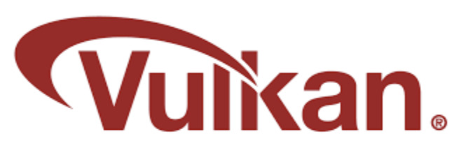

Software
Besturingssystemen
Voor de Raspberry Pi is het algemeen aanbevolen besturingssysteem het Raspberry Pi OS, een Debian—gebaseerd systeem. Dit besturingssysteem wordt gebruikt omdat het speciaal is ontwikkeld voor de Raspberry Pi—hardware, een lage basisgeheugenvereiste heeft en beschikbaar is in:
- 32—bit
- 64—bit
Dit besturingssysteem wordt op de meeste modellen vooraf geïnstalleerd op de microSD—kaart. Later werd het ook mogelijk om andere besturingssystemen op de Raspberry Pi te installeren, zoals macOS, Ubuntu en Windows.
Firmware
De officiële broncode van de Raspberry Pi—firmware is niet openbaar beschikbaar. Er bestaat echter een experimenteel open—source alternatief dat, hoewel beperkt, de ARM—processorkernen van de Raspberry Pi toont en een basisversie van Linux bevat. Dit is vooral waardevol voor ontwikkelaars.
Driver—API's
De Raspberry Pi maakt gebruik van Broadcom's VideoCore—GPU. Het grootste deel van de driver bestaat uit gesloten—bron GPU—firmware, die samenwerkt met een open—source kernel—driver die communiceert met deze gesloten firmware.
In 2020 werd bevestigd dat er gewerkt wordt aan een Vulkan—graficsdriver. Vulkan is een platformonafhankelijke API die de grafische prestaties kan verbeteren, ongeacht de hardware. Dit betekent dat de Vulkan—API mogelijk het prestatieniveau van de Raspberry Pi dichter bij dat van een volledige pc kan brengen. Deze ontwikkeling is echter nog steeds in uitvoering.
